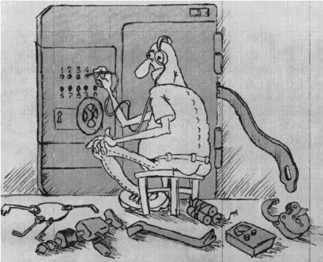

 Как их только ни называют в отечественой литературе - и хакерами, и хаккерами, и хэккерами и даже... хацкерами! Сколько копий было сломано в бесплодных интеллектуальных баталиях при попытке выяснить: так кто же они такие - гении программирования или недоучившиеся студенты? Интеллектульная элита современного компьютерного сообщества или морально ущербные личности? Давайте немножко приоткроем кулисы компьютерного андеграунда и заглянем в образовавшуюся щелку. Все-таки интересно, а кто же там есть на самом деле?
И в первую очередь мы видим многочисленную армию молодых людей, которых к собственно хакерам можно отнести с большой натяжкой. Это, как правило, студенты младших курсов ВУЗов, которых сравнительно недавно научили немножко программировать, которым бегло показали, как "ползать" по Интернету и как составлять собственные Java-скрипты. Дальше начинается собственное "творчество", заключающееся в написании примитивных вирусов и нюков, взломе несложно защищенных программ или мелком хулиганстве на чужих Интернет-сайтах. В сущности, все эти действия направлены на достижение тривиальнейшей цели - продемонстрировать себе и окружающим способность быть не хуже других, свою "крутизну". В среде компьютерного андеграунда эта социальная группа получила презрительное прозвище ламеры. Объективности ради следует отметить, что как вреда, так и пользы от такого рода деятельности немного. Видимо, для некоторых чайников это совершенно естественный и закономерный этап в истории профессионального становления. Абсолютное большинство взрослеет и вырастает из своего ламерства, как из детских штанишек. Но звона и треска от такого рода псевдохакеров много, и именно эта социальная категория служит питательной средой для формирования компьютерной общественностью своего мнения о сущности понятия хакер. Вторая группа хакеров, тусующихся на сцене компьютерного андеграунда, - это "манифестанты интеллектуального протеста". Увы, программирования в том виде, как его преподают студентам в наших ВУЗах, уже нет, оно практически вымерло. Зайдите на лекцию по началам программирования где-нибудь на ФАИТе или 6-м факультете СГАУ, и вы услышите из уст лектора термины типа "дихотомия", "рекурсия", "пузырьковая сортировка", "оптимизация цикла"... а кому это сейчас нужно? В наше время от программиста требуется умение всего лишь правильно разметить мышкой на экране Windows-окно, заполнить его изображениями нужных кнопок и запустить компилятор какого-нибудь Visual BASIC. И все, работоспособное приложение готово! Где тут творчество? Фигурально выражаясь, в наших ВУЗах готовят живописцев на высоких примерах Рафаэля и Айвазовского, а фактически требуются специалисты по равномерной протяжке малярных валиков поверх заранее заготовленых трафаретов. Я уж не говорю о том, что в 90% случаев под "программированием" понимается умение правильно втыкать кабели в системный блок при переноске компьютера с одного стола на другой и владение настройкой 1С:Бухгалтерии. Но раз против прогресса не попрешь, возникает подсознательное стремление выразить себя в других, менее формальных областях программирования. И ряд программистов в свободное от добывания денег время начинают применять свои знания и умения в полном объеме... но только реализуя свое творчество в менее традиционных формах. Например, становятся демерами. Слабо, например, уместить ничем внешне не отличающуюся от полноценного мультимедийного приложения собственную глюкалку в несколько килобайт? Для тех, кто считает, что это невозможно, но помнит еще, что такое язык ассемблера, приведу в качестве примера коротенький фрагмент, задерживающий выполнение программы примерно на одну секунду:
mov cx, 18 @1:hlt loop @1 В "нормальной" мультимедийной программе на выполнение этой операции уходят килобайты кода, включающего пренастройку таймера, переназначение обработчиков прерываний и прочие действия. А тут всего три команды! Теперь верите? Другие уходят в вирусологию. О, как наркотически-завлекательно написать нечто, скрытно распространяющееся по чужим компьютерам, предотвращающее все попытки собственного обнаружения, постоянно мутирующее, в случае опасности рассыпающееся на части, а после воссоздающееся вновь! Но не менее возбуждает и азартная охота за этими зловредными электронными организмами, установка ловушек и засад, изучение кода пойманного вируса и разработка собственных защитных средств. Представителей этих немногочисленных групп называют соответственно вирмерами и аверами. Третьи занимаются изучением кода чужих программ и "крэкерством". С отладчиком наперевес, неделями бродят в темных и сырых джунглях операционных систем и прикладных программ, выискивая доселе неизвестные особенности их использования. Например, именно крэкеры первыми открыли для широкой общественности тот факт, что для излечения "картавости" у некогда (да и сейчас!) чудовищно популярной оболочки Norton Commander достаточно изменить в распакованном коде программы NCMAIN.EXE значение байта с 16-ричным смещением 1E02h с E0h на 00. Полезно? Несомненно! Эта типично "крэкерская" разработка даже вошла в ранние издания знаменитой книги В.Э. Фигурнова "IBM PC для пользователя". Кроме того, крэкеры вносят мелкие, но точно рассчитанные изменения в двоичный код чужих программ (в-основном, компьютерных игр), что приводит к возникновению у них новых удивительных свойств. Конечно, все занятия такого рода требуют от хакера достаточно высокой программистской квалификации. "Манифестантов интеллектуального протеста" не слишком много, и они не всегда на виду. Они тусуются в своем узком кругу, живут в разных городах, общаются преимущественно по электронной почте, издают свои зинесы, проводят свои "конкурсы профессионального мастерства" и, по моим наблюдениям, вполне счастливы. Интересно, что эта хакерская прослойка наиболее характерна именно для стран бывшего СССР. Думаю, не трудно сообразить - почему. Вы можете ближе ознакомиться с этой категорией людей и их деятельностью, посетив Интернет-сайт http://www.hackzone.ru.
Но обычно, когда мы говорим о "хакерах", мы вспоминаем прежде всего криминальную сторону их деятельности. То, что она частенько присутствует в "творчестве" отдельных личностей, причисляемых к хакерам, - несомненно. Причины самые разные: у кого-то это воспаленное самолюбие, у кого-то жажда мести, а у некоторых - тривиальная корысть. Вот несколько ярких примеров, расположенных в хронологическом порядке. В 1974 году некий тольяттинский программист, поссорившись с начальством, внес в код программы, управлявшей работой главного конвейера ВАЗа, ряд мелких, но эффективных модификаций, приведших к нарушениям и остановке технологического цикла производства "жигулей". В ноябре 1988 г. аспирант Корнелльского университета Роберт Моррис (младший) написал и выпустил в "дикую природу" сетевого червя - программу, скрытно распространившуюся по университетским и бизнес-сетям северной Америки и парализовавшую на несколько дней их функционирование. В 1995-96 гг. петербургский предприниматель Владимир Левин, купив за крупную сумму пакет специализированных хакерских программ, занялся "восполнением финансовых затрат", а именно нелегальным подключением к информационным потокам ряда западных банков и переводом на свой счет денежных средств. В течение ряда лет американец Кевин Митник "сотоварищи" взламывал закрытые сети ряда крупнейших мировах компаний, таких как Motorola, NEC, Sun и других, и приторговывал информацией "для служебного пользования". В 1998 г. еще один наш земляк, самарский фрейкер Владимир Ф., приспособил хакерские программы к взлому телефонных сетей и некоторое время бесплатно пользовался услугами междугородней и международной телефонной связи. В начале апреля 1999 г. наводнили электронную почту и существенно "напрягли" мировой трафик копии вируса Melissa, распространенного "умельцем" из Нью-Джерси; а в конце апреля активизировался и испортил миллионы компьютеров во всем мире вирус Win32.CIH, написанный тайваньским студентом Чен Инг Хау. Все эти "злодеи" были разоблачены и получили по заслугам. Но перед нами только самая верхушка айсберга. Существуют глубоко законспирированные организации, члены которых являются высокопрофессиональными программистами и живут исключительно за счет доходов, полученных в результате компьютерных "взломов". Практически каждая прикладная программа и компьютерная игра на пиратском компакт-диске имела когда-то защиту от несанкционированного копирования, но потеряла ее в результате деятельности "крэкеров" и превратилась в варез. По некоторым оценкам правоохранительными органами США ежегодно заводится до десяти тысяч уголовных дел по фактам преступлений в сфере компьютерной информации. И количество их все время возрастает. Приступили к борьбе с компьютерными преступниками и отечественные стражи закона и порядка. С 1997 года в УК РФ внесены уголовные статьи 272, 273 и 274, предусматривающие наказание за неправомерный доступ к компьютерной информации, за создание и использование вредоносных программ и за предумышленные действия, приводящие к уничтожению, искажению, блокированию информации и прочим "неприятностям". В крупных городах (в том числе и в Самаре) созданы специализированные милицейские отделы "Р", предназначенные именно для борьбы с преступлениями в сфере информационных технологий.
Но увы, чисто карательными мерами проблему не решить. Что могут наши правоохранительные органы? Только разоблачить и наказать злоумышленника "по всей строгости закона", то есть сработать по свершившемуся факту правонарушения. Между тем давно известно, что только деятельность в социальной, а не юридически-правовой сфере, способна обуздать преступность. Но могут ли наши правоохранительные органы противопоставить азартно горящим глазам юного хакера что-нибудь более существенное и эффективное, чем сухой параграф закона и стальные ножницы, кромсающие очередной пиратский компакт-диск? Способны ли они поступить дифференцированно: корыстолюбца действительно наказать; гениальному бездельнику дать достойную интересную работу; деятельность "идейного" хакера даже поощрить и направить в легальное русло? Не уверен. Да и не должны они заниматься этим. Это - забота всех остальных, всего компьютерного сообщества, то-есть нас. Прежде всего необходимо если не изменение, то коррекция нашего общественного мнения. В средс- твах массовой информации в последнне время можно слышать "ахи" и "охи" по поводу того, что "хакеры совсем распоясались", "не скрываясь выпус- кают в Москве свой журнал", "открыто содержат свои отвратительные Ин- тернет-сайты"... Между тем, как мне кажется, надо не плакать, а радо- ваться, что деятельность части компьютерного андеграунда введена в ка- кие-то легальные рамки, открыта, общедоступна и в принципе подвержена контролю. Не секрет, что значительную роль в увлечении хакерством иг- рает невыветрившаяся детская тяга к игре в "казаки-разбойники" (воз- можно, восходящая еще к большевистской "конспиГации"). Терпимое отно- шение к безобидным формам хакерства, их легализация должны, по идее, нивелировать романтику "нелегальщины" и "демонизма", популярную среди некоторой части юных озорников и "анфан терриблей". С этой точки зрения, как мне представляется, крайне негативными и недопустимыми должны считаться такие явления, как освещение средствами массовой информации работы специализированных отделов "Р" исключительно как деятельности по "искоренению хакерства"; автоматическое (без внимательного ознакомления с содержимым) удаление Интернет-провайдерами любых частных WWW-страниц, в которых встречаются слова "хакер", "вирус" и прочие; безграмотное и злорадное смакование теми же СМИ подробностей различных уголовных дел, возбужденных по фактам компьютерных преступлений. Но, конечно, хакерские действия, носящие явно криминальный характер и приводящие к конкретному ущербу, оправдываться ни в коем случае не должны. И, наконец, хочется остановиться на самом главном условии, выпол- нение которого способствовало бы существенному снижению вреда от дея- тельности "компьютерных неформалов". Я имею в виду прежде всего про- фессионализм компьютерных пользователей и специалистов. Эх, если бы все сисадмины умели бы грамотно настраивать защиту своих сетей! Если бы все юзеры хотя бы раз в неделю запускали свежий антивирус! Если бы системщики не форматировали бы все винчестеры в конторе при малейшем подозрении на вирус, а умели бы объективно оценить угрозу и самостоя- тельно обезвредить заразу! Между прочим, эти "если бы" вполне возможны при некотором активном желании со стороны упомянутых сисадминов, юзеров и системщиков, то-есть всех нас. Не находите?
Хакер - представитель компьютерного андеграунда; социальный тип, являющийся объектом рассмотрения в данной статье. Чайник - лицо, слабо разбирающееся в программировании и информационных технологиях; компьютерный невежда. Ламер - жалкое существо, мало чем отличающееся в профессиональном смысле от "чайника", но активно стремящееся пустить окружающим пыль в глаза, заявить о своей "крутизне". Демер - программист, использующий свои таланты с целью создания программ, демонстрирующих изощренные аудиовизуальные эффекты, глюкалок (демок). Вирмер - программист, активно создающий (и, возможно, распространяющий) новые компьютерные вирусы. Авер - программист, изучающий чужие вирусы и разрабатывающий собственные непрофессиональные средства защиты. Крэкер - программист, занимающийся "взломом" чужих программ, то есть внесением в их двоичный код непредусмотренных авторами исправлений и модификаций. Фрейкер - лицо, использующее свои знания и умения с целью незаконного использования информационных (прежде всего - коммуникационных) ресурсов. Варез - взломанное "крэкером" и ставшее в результате этого общедоступным программное обеспечение. Зинесы - специализированные электронные журналы различных групп компьютерного андеграунда. Глюкалка (демка) - оптимально написанная программа, не предназначенная для выполнения каких-нибудь особо полезных действий, но производящая изощренные аудиовизуальные эффекты. Нюк (нюка) - вредоносная программа, предназначенная для уничтожения информации на компьютере. Сисадмин - системный администратор (например, локальной сети). Юзер - пользователь. Системщик - системный программист. При подготовке статьи использованы материалы из сети Интернет,
содержимое ряда пиратских компакт-дисков, а также результаты личного
обмена мнениями с некоторыми представителями компьютерного
андеграунда.
(C) К. Климентьев, E-mail : drmad@dr.com. |